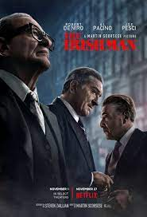
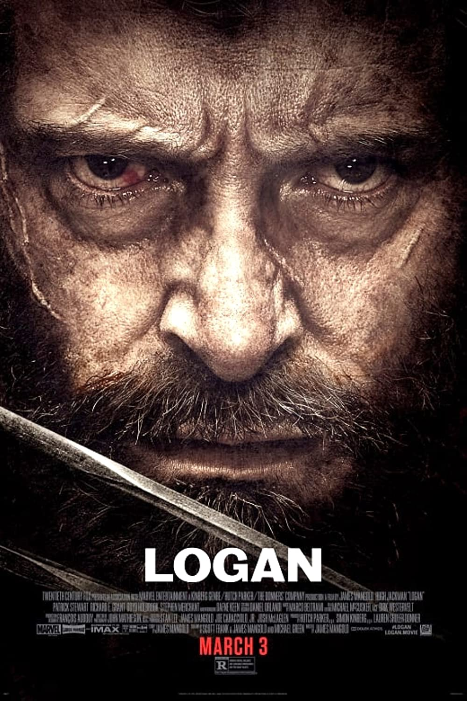
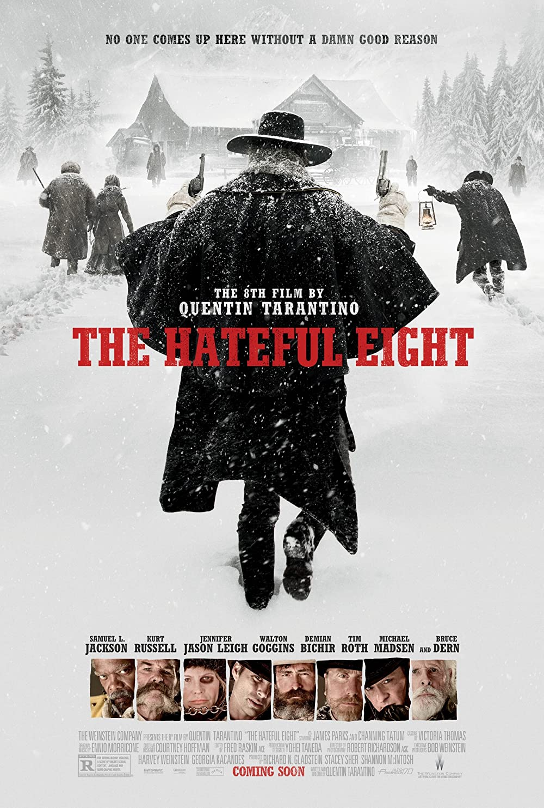

Sejarah Film

Perkembangan film memiliki perjalanan cukup panjang hingga pada
akhirnya menjadi seperti film di masa kini yang kaya dengan efek,
dan sangat mudah didapatkan sebagai media hiburan. Perkembangan film
dimulai ketika digunakannya alat kinetoskop temuan Thomas Alfa
Edison yang pada masa itu digunakan oleh penonton individual. Film
awal masih bisu dan tidak berwarna. Pemutaran film di bioskop untuk
pertama kalinya dilakukan pada awal abad 20, hingga industri film
Hollywood yang pertama kali, bahkan hingga saat ini merajai industri
perfilman populer secara global. Pada tahun 1927 teknologi sudah
cukup mumpuni untuk memproduksi film bicara yang dialognya dapat
didengar secara langsung, tetapi masih hitam-putih. Hingga pada 1937
teknologi film sudah mampu memproduksi film berwarna yang lebih
menarik dan diikuti dengan alur cerita yang mulai populer. Pada
tahun1970-an, film sudah bisa direkam dalam jumlah massal dengan
menggunakan videotape yang kemudian dijual. Tahun 1980-an ditemukan
teknologi laser disc, lalu VCD dan kemudian menyusul teknologi DVD.
Hingga saat ini digital movie yang lebih praktis banyak digemari
sehingga semakin menjadikan popularitas film meningkat dan film
menjadi semakin dekat dengan keserarian masyarakat modern.
Film Terbaik Menurut IMDB
1. The Shawshank Redemption (1994)

The Shawshank Redemption adalah film drama Amerika Serikat tahun
1994 yang ditulis dan disutradarai Frank Darabont dan dibintangi Tim
Robbins dan Morgan Freeman. Diadaptasi dari novella karya Stephen
King, Rita Hayworth and Shawshank Redemption, film ini menceritakan
kisah Andy Dufresne, seorang bankir yang menghabiskan hampir dua
puluh tahun di Shawshank State Prison atas pembunuhan istri dan
selingkuhannya meski ia mengklaim tidak melakukannya. Di penjara, ia
berteman dengan Ellis Boyd "Red" Redding dan dilindung para penjaga
setelah kepala penjara memanfaatkannya dalam operasi pencucian uang.
Meski pendapatan filmnya nyaris menyamai anggarannya, film ini
dipuji oleh berbagai kritikus, masuk sejumlah nominasi penghargaan,
dan laris di televisi kabel, VHS, DVD, dan Blu-ray. Film ini masuk
100 Years...100 Movies 10th Anniversary Edition yang disusun
American Film Institute.
2. The Godfather (1972)

The Godfather adalah sebuah film kriminal Amerika tahun 1972, yang
disutradarai oleh Francis Ford Coppola dan diproduksi oleh Albert S.
Ruddy dengan skenario oleh Mario Puzo dan Coppola. Dibintangi oleh
Marlon Brando dan Al Pacino sebagai pemimpin dari keluarga kriminal
di New York (fiksi), cerita meliputi tahun 1945-1955, berfokus pada
transformasi Michael Corleone yang kemudian menjadi bos Mafia yang
kejam dengan menceritakan Vito sebagai kepala Keluarga Corleone.
Berdasarkan novel laris Puzo dengan nama yang sama, The Godfather
secara umum dianggap sebagai salah satu film terbesar di dunia
perfilman, dan juga sebagai salah satu film yang paling berpengaruh,
terutama dalam film berjenis Gangster. Peringkat kedua setelah
Citizen Kane diperuntuhkan oleh American Film Institute pada tahun
2007, film tersebut dipilih untuk dilestarikan di Amerika Serikat
National Film Registry pada tahun 1990. Film ini merupakan film
terlaris sepanjang masa yang pernah dibuat, dan tetap menjadi
pemimpin box office pada tahun 1972. Film ini berhasil memenangkan
tiga Oscar pada tahun itu: Best Picture, Best Actor (Brando) dan
kategori Skenario Adaptasi Terbaik untuk Puzo dan Coppola. Nominasi
dalam tujuh kategori lainnya termasuk Pacino, James Caan, dan Robert
Duvall untuk Aktor Pendukung Terbaik dan Coppola sebagai Sutradara
Terbaik. Keberhasilan film ini melahirkan dua film lanjutannya: The
Godfather Part II pada tahun 1974, dan The Godfather Part III pada
tahun 1990.
3. The Dark Knight (2008)

The Dark Knight adalah film superhero 2008 yang disutradarai,
diproduksi, dan ditulis bersama oleh Christopher Nolan. Berdasarkan
karakter DC Comics Batman, film ini merupakan sekuel kedua dari the
Dark Knight Trilogy karya Nolan dan sekuel dari Batman Begins tahun
2005., dibintangi oleh Christian Bale dan didukung oleh Michael
Caine, Heath Ledger, Gary Oldman, Aaron Eckhart, Maggie Gyllenhaal,
dan Morgan Freeman. Dalam film tersebut, Bruce Wayne /Batman (Bale),
Letnan Polisi James Gordon (oldman) dan Jaksa Distrik Harvey
Dent(Eckhart) membentuk aliansi untuk membongkar kejahatan
terorganisir di Kota Gotham, tetapi diancam oleh dalang anarkis yang
dikenal sebagai Joker (Ledger), yang berusaha melemahkan pengaruh
Batman dan membuat kota kacau balau. Inspirasi Nolan untuk film ini
adalah debut buku komik Joker pada tahun 1940, novel grafis 1988 The
Killing Joke, dan seri 1996 The Long Halloween, yang menceritakan
kembali asal usul Harvey Dent. Julukan "Ksatria Kegelapan" pertama
kali diterapkan pada Batman di Batman #1 (1940), dalam sebuah cerita
yang ditulis oleh Bill Finger.[4][5] The Dark Knight difilmkan
terutama di Chicago, serta di beberapa lokasi lain di Amerika
Serikat, Inggris, dan Hong Kong. Film ini adalah fitur utama pertama
yang menggunakan sebagian kamera IMAX 70 mm, dengan Nolan
menggunakannya selama 28 menit dari film, termasuk penampilan
pertama Joker. Warner Bros. awalnya membuat kampanye viral marketing
untuk The Dark Knight, mengembangkan situs web promosi dan trailer
yang menyoroti tangkapan layar Ledger sebagai Joker. Ledger
meninggal pada 22 Januari 2008, beberapa bulan setelah dia
menyelesaikan pembuatan film dan enam bulan sebelum rilis film, yang
menyebabkan perhatian besar dari pers dan publik film. Dianggap
sebagai salah satu film terbaik dalam dekadenya dan salah satu dari
terhebat dan paling berpengaruh sepanjang masa, film ini menerima
pujian kritis untuk skenario, gaya visual, skor musik, aksi, tema
dewasa, Akting (terutama Ledger), sinematografi, urutan aksi dan
arahan. Film ini juga mencetak banyak rekor selama pemutaran
teaternya.[6] The Dark Knight muncul di 287 daftar sepuluh besar
kritikus, lebih banyak daripada film lain tahun 2008 kecuali WALL-E
, dan lebih banyak kritikus (77) menobatkan The Dark Knight sebagai
film terbaik yang dirilis tahun itu.[7] Dengan pendapatan lebih dari
$1 miliar di seluruh dunia, ini menjadi film terlaris keempat pada
saat itu, dan film berpenghasilan tertinggi 2008; itu juga
memecahkan rekor untuk pembukaan domestik dengan pendapatan kotor
tertinggi dengan $158 juta, rekor yang dipegangnya selama tiga
tahun.[8] Di 81st Academy Awards, film tersebut menerima delapan
nominasi; itu memenangkan penghargaan untuk Pengeditan Suara Terbaik
dan Ledger secara anumerta dianugerahi Aktor Pendukung Terbaik. Pada
tahun 2020, film tersebut dipilih untuk pelestarian di Amerika
Serikat National Film Registry oleh Library of Congress karena
"signifikan secara budaya, sejarah, atau estetika",[9] menjadi film
superhero kedua setelah Superman tahun 1978 yang mendapatkan
penghargaan tersebut. The Dark Knight Rises, film terakhir dalam
trilogi, dirilis pada tahun 2012.
4. The Godfather 2 (1974)

The Godfather Part II adalah sebuah film kejahatan epik Amerika 1974
yang diproduksi dan disutradarai oleh Francis Ford Coppola dari
sebuah permainan latar hasil kerjasama penulisan dengan Mario Puzo,
yang dibintangi oleh Al Pacino dan Robert De Niro. Sebagian
berdasarkan pada novel Puzo 1969 The Godfather, film tersebut adalah
sekuel dan prekuel dari The Godfather, yang menampilkan drama
paralel: cerita yang berlatar belakang tahun 1958 tentang Michael
Corleone (Pacino), pemimpin kelompok penjahat baru dari keluarga
penjahat Corleone, yang melindungi bisnis keluarganya sebagai akibat
dari upaya hidupnya; prekuelnya menceritakan tentang perjalanan
ayahnya, Vito Corleone (De Niro), dari masa kecilnya di Sisilia
sampai mendirikan kewirausahaan keluarganya di New York City. Sekuel
lainnya, The Godfather Part III, dirilis pada 1990.
5. 12 Angry Men (1957)

12 Angry Men adalah film drama Amerika Serikat tahun 1957 yang
diadaptasi dari seri televisi “Teleplay” dengan nama yang sama,
karya Reginald Rose. Ditulis dan diproduksi ulang oleh Rose sendiri
dan disutradarai oleh Sidney Lumet.
Film terbaik menurut Author
1. Forrest Gump (1994)

Forrest Gump adalah film drama Amerika Serikat tahun 1994
berdasarkan novel tahun 1986 karya Winston Groom. Film ini sukses
secara komersial dan menjadi film terlaris di Amerika Utara pada
tahun perilisannya. Film ini meraih total 13 nominasi Academy Awards
dan memenangkan enam di antaranya, termasuk Film Terbaik, Sutradara
Terbaik (Robert Zemeckis), dan Aktor Terbaik (Tom Hanks). Film ini
menceritakan tentang seorang pria dengan IQ 75 dan epik perjalanan
hidupnya, bertemu dengan tokoh-tokoh bersejarah, memengaruhi budaya
pop dan bahkan turut di dalam peristiwa-peristiwa bersejarah tanpa
menyadari betapa pentingnya peristiwa itu, akibat kecerdasannya yang
di bawah rata-rata. Film ini berbeda secara substansi dari karya
novel aslinya.
2. The Irishman (2019)

The Irishman adalah film biografi kejahatan yang disutradarai oleh
Martin Scorsese dan ditulis oleh Steven Zaillian, diangkat dari buku
I Heard You Paint Houses karya Charles Brandt. Film ini dibintangi
Robert De Niro, Al Pacino, dan Joe Pesci. Ini adalah kolaborasi
kesembilan De Niro dan Scorsese dan film pertama mereka sejak Casino
(1995), film keempat yang dibintangi De Niro dan Pacino (sejak The
Godfather Part II, Heat, dan Righteous Kill), dan film Scorsese
pertama yang dibintangi Pacino. Dengan anggaran sekitar $200 juta,
ini adalah salah satu film termahal sepanjang karier Scorsese. Pada
September 2014, The Irishman diumumkan sebagai film Scorsese
berikutnya setelah Silence (2016). Pacino, De Niro, dan Pesci
diumumkan sebagai pemeran film pada bulan yang sama. Pesci kembali
terjun ke perfilman setelah berkali-kali diminta terlibat dalam film
ini. Pengambilan gambar dilakukan di New York City, Mineola, dan
Williston Park di Long Island pada September 2017 hingga Maret 2018.
Film ini akan tayang perdana di New York Film Festival tanggal 27
September 2019. Penayangan perdana global akan diadakan di BFI
London Film Festival tanggal 13 Oktober 2019. Film ini akan dirilis
terbatas di bioskop, lalu dirilis secara digital pada akhir 2019 di
Netflix.[
3. Logan (2017)

Logan adalah film pahlawan super Amerika 2017 yang menampilkan
karakter Marvel Comics Wolverine, diproduksi oleh Marvel
Entertainment, TSG Entertainment, dan The Donners' Company, dan
didistribusikan oleh 20th Century Fox.[3][4] Ini adalah angsuran
kesepuluh dalam seri film X-Men, serta film solo Wolverine ketiga
dan terakhir setelah X-Men Origins: Wolverine (2009), The Wolverine
(2013).[5][6] Film ini mengambil inspirasi dari "Old Man Logan" oleh
Mark Millar dan Steve McNiven, yang mengikuti masa lalu Logan yang
benar-benar melakukan perjalanan terakhir di masa depan
dystopian.[7][8][9] Film ini disutradarai oleh James Mangold, yang
turut menulis skenario dengan Scott Frank dan Michael Green, dan
sebuah cerita oleh David James Kelly dan Mangold.[10] Hugh Jackman
berperan sebagai Logan dalam penggambaran terakhir karakter tersebut
setelah memainkan peran tersebut selama 17 tahun, dengan dibintangi
Patrick Stewart sebagai Charles Xavier.[11] Richard E. Grant, Boyd
Holbrook, Stephen Merchant, Dafne Keen (dalam peran film
pertamanya), Eriq La Salle, Elise Neal dan Elizabeth Rodriguez
semuanya tampil dalam peran pendukung.[12][13] Pengambilan gambar
utama dimulai di Louisiana pada tanggal 2 Mei 2016 dan berakhir pada
tanggal 19 Agustus 2016 di New Mexico.[14][15][16] Lokasi yang
digunakan untuk Logan adalah Louisiana, New Mexico, dan
Mississippi.[17][18][19] Logan ditayangkan di Festival Film
Internasional Berlin ke-67 pada tanggal 17 Februari 2017, dan secara
teatrikal dirilis di Amerika Serikat pada tanggal 3 Maret 2017,
dalam format standar dan IMAX.[20] Ini mendapat pujian dari kritikus
dan penonton, dengan beberapa penyebutnya sebagai salah satu film
superhero terbaik sepanjang masa,[21] dan telah menghasilkan
pendapatan kotor sebesar $616,795,600 di seluruh dunia dari anggaran
$97 juta, menjadikannya sebagai film terlaris keempat tertinggi
tahun 2017.
4. Django Unchained (2012)

Django Unchained adalah film drama kriminal thriller Amerika Serikat
tahun 2012 yang disutradarai oleh Quentin Tarantino dan diproduseri
oleh Reginald Hudlin, Stacy Sher dan Pilar Savone. Naskah film ini
ditulis oleh Quentin Tarantino. Film ini dibintangi oleh Jamie Foxx,
Christoph Waltz, Leonardo DiCaprio, Kerry Washington, Samuel L.
Jackson dan Walton Goggins. Film Django Unchained merupakan film
kolaborasi kedua Jamie Foxx dan Kerry Washington setelah film Ray.
Film ini ditayangkan secara perdana di Ziegfeld Theatre pada tanggal
11 Desember 2012 dan dirilis di Amerika Serikat pada tanggal 25
Desember 2012.[3][4] Film ini mendapatkan review positif dari para
kritikus.
5. The Hateful Eight (2015)

The Hateful Eight adalah film kriminal misteri thriller Amerika
Serikat tahun 2015 yang disutradarai oleh Quentin Tarantino dan
diproduseri oleh Richard N. Gladstein, Shannon McIntosh dan Stacey
Sher. Naskah film ini ditulis oleh Quentin Tarantino. Film ini
dibintangi oleh Samuel L. Jackson, Kurt Russell, Jennifer Jason
Leigh, Walton Goggins, Demián Bichir, Tim Roth, Michael Madsen dan
Bruce Dern sebagai delapan orang asing yang berlindung dari badai
salju di tempat peristirahatan kereta kuda setelah Perang Saudara
Amerika Serikat. Film The Hateful Eight ditayangkan secara perdana
di Cinerama Dome pada tanggal 8 Desember 2015 dan dirilis di Amerika
Serikat pada tanggal 25 Desember 2015 secara terbatas dan 30
Desember 2015 secara luas.[4] Film ini mendapatkan review positif
dari para kritikus.